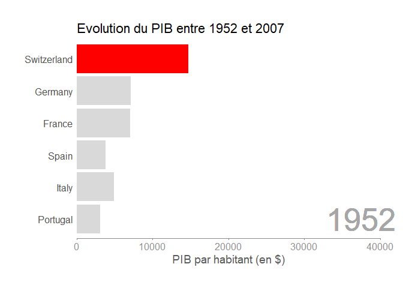
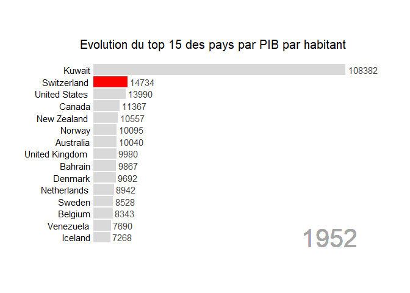
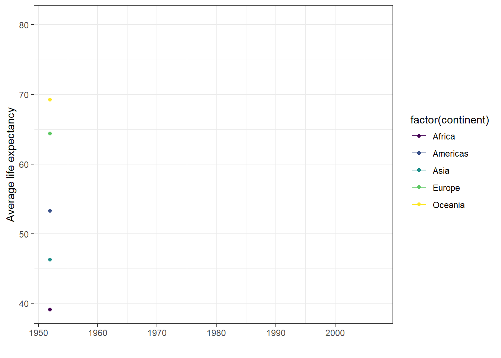
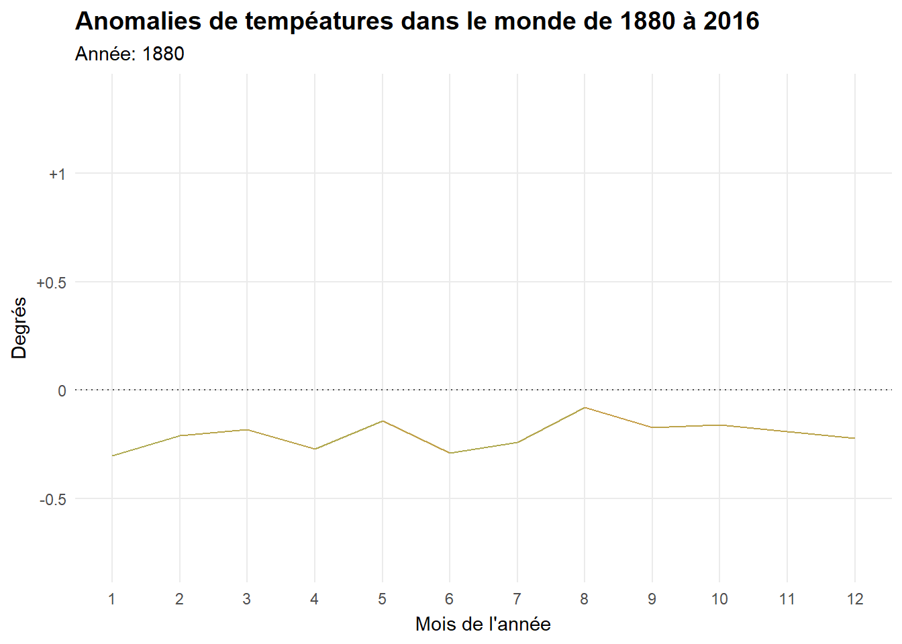
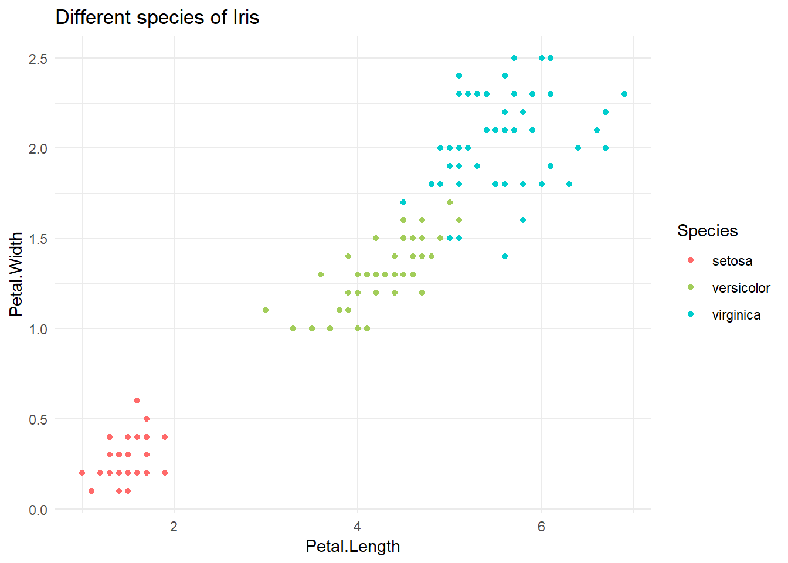
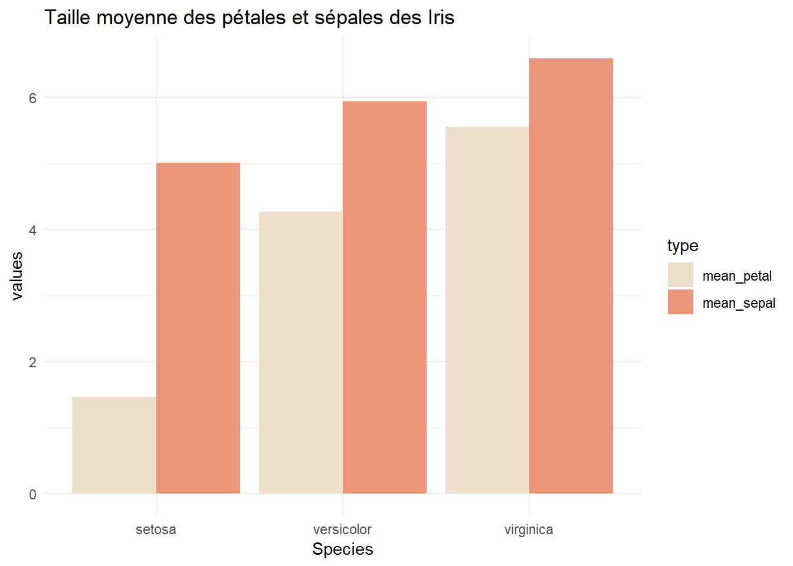
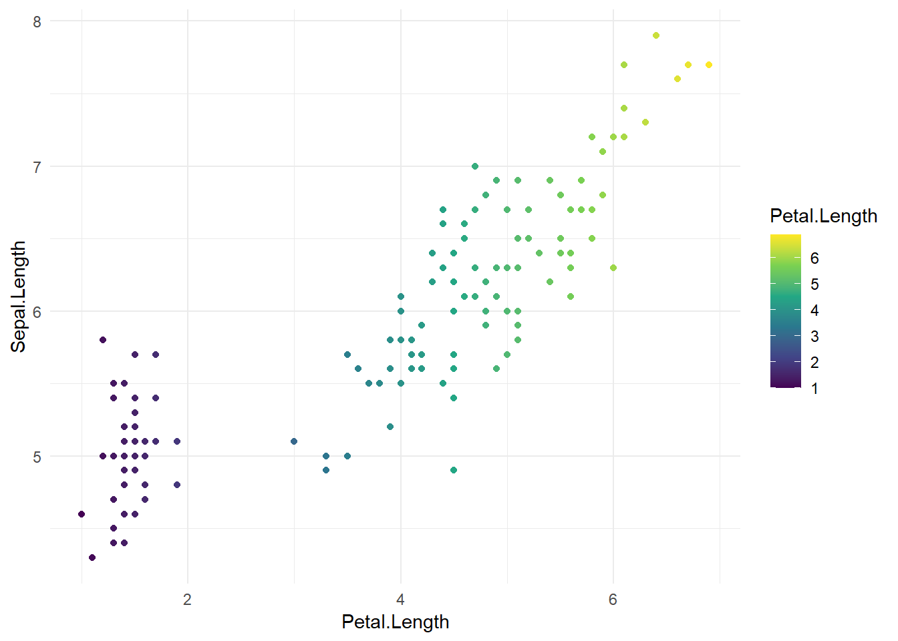

library(dplyr)
library(ggplot2)
library(gganimate)
library(gapminder)
library(gifski)
data("gapminder")How to animate your plots with R
In progress
There are many ways to animate plots in R but I mainly the three following ways:
- using gganimate package
- using ggiraph package
- using plotly package
1. Gganimate
Change between two states:
data <- gapminder %>%
mutate(gdpPercap = round(gdpPercap,0)) %>%
filter(year == 1952 | year == 2007,
country %in% c("Switzerland", "France", "Germany", "Spain", "Italy", "Portugal")) %>%
arrange(desc(gdpPercap)) %>%
mutate(country = factor(country, level = rev(unique(country))))
plot_1 <- ggplot(data) +
geom_col(aes(country, gdpPercap, fill = country)) +
scale_fill_manual(values = c("Switzerland" = "red"), na.value = "grey85") +
scale_y_continuous(limits = c(0,40000),
expand = c(0,0)) +
coord_flip(clip = "off") +
labs( title = "Evolution du PIB entre 1952 et 2007",
y = "PIB par habitant (en $)") +
geom_text(aes(x = 1, y = max(gdpPercap) , label = as.factor(year)), col = "grey65", size = 14) +
theme(
panel.background = element_blank(),
legend.position = "none",
title = element_text(size = 14),
axis.ticks.y = element_blank(),
axis.title.y = element_blank(),
axis.text.y = element_text(size = 12),
axis.line.x = element_line(color = "grey55"),
axis.text.x = element_text( color = "grey55", size = 12),
axis.ticks.x = element_line(color = "grey55"),
axis.title.x = element_text(color = "grey35"),
plot.margin = margin(1, 1, 1, 1, "cm")
) +
transition_states(year, wrap = FALSE)
animate(plot_1, fps = 30, duration = 5, rewind = FALSE)
Change between multiples states:
data <- gapminder %>%
group_by(year) %>%
arrange(year, desc(gdpPercap)) %>%
mutate(ranking = row_number()) %>%
filter(ranking <=15) %>%
mutate(gdpPercap = round(gdpPercap,0))
# 5. Créer l'animation avec une transition_states
plot_2 <- ggplot(data) +
geom_col(aes(ranking, gdpPercap, fill = country)) +
scale_fill_manual(values = c("Switzerland" = "red"), na.value = "grey85") +
geom_text(aes(ranking, gdpPercap, label = as.character(gdpPercap)), color = "grey25", hjust=-0.1) +
geom_text(aes(ranking, y=0 , label = country), hjust=1.1) +
geom_text(aes(x=15, y=max(gdpPercap), hjust = 1, label = as.factor(year)), col = "grey65", size = 11) +
labs(title = "Evolution du top 15 des pays par PIB par habitant") +
coord_flip(clip = "off") +
scale_x_reverse() +
theme_minimal() +
theme(
panel.grid = element_blank(),
legend.position = "none",
axis.ticks.y = element_blank(),
axis.title.y = element_blank(),
axis.title.x = element_blank(),
axis.text.x = element_blank(),
axis.text.y = element_blank(),
plot.title = element_text(size = 15),
plot.margin = margin(0.1, 0.1, 0.1, 0.2, "npc")
) +
transition_states(year, transition_length = 5, state_length = 1) +
enter_fade() +
exit_fade() +
ease_aes('quadratic-in-out')
animate(plot_2, fps = 30, duration = 15, rewind = FALSE)
Transition reveal:
geom_point() + transition_reveal(year)
data <- gapminder %>% group_by(continent, year) %>% summarise(lifeExp_mean = mean(lifeExp))
ggplot(data,
aes(year, lifeExp_mean, color = factor(continent), group = continent)) +
geom_line() +
scale_color_viridis_d() +
labs(x = "",
y = "Average life expectancy") +
theme_bw() +
geom_point() +
transition_reveal(year)
Transition time:
library(tidyverse)
library(transformr)
df <- read_csv("data/4_viz_6_line_data.csv")
df <- df %>%
mutate( highlight=ifelse(year=="2016", "2016", "Other"))
ggplot(df, aes(x=month, y=Mean, group=year, color= Mean )) +
geom_line() +
scale_color_gradient2(low = "#68bd65", mid = "#fa792d" , high = "#da0116" , midpoint = 0.5) +
scale_y_continuous(breaks = c(-0.5, 0, 0.5, 1, 1.5),
labels = c("-0.5", "0", "+0.5", "+1", "+1.5")) +
scale_x_continuous(breaks = c(1:12), labels = c(1:12), limits = c(1,12)) +
theme_minimal() +
geom_hline( yintercept = 0, linetype="dotted", color = "gray30", size = 0.5 ) +
labs(title = "Anomalies de tempéatures dans le monde de 1880 à 2016",
subtitle = 'Année: {round(frame_time,0)}',
x = "Mois de l'année", y = 'Degrés') +
theme(legend.position="none",
plot.title = element_text( face = "bold", size =14),
panel.grid.minor = element_blank()) +
transition_time(year) +
ease_aes("linear")
2. Ggiraph
library(ggiraph)
library(datasets)
library(htmltools)# 1. Graphique de point de base
ggplot(iris, aes(x = Petal.Length, y = Petal.Width,color = Species)) +
geom_point( ) +
labs(title = "Different species of Iris") +
scale_color_manual(values = c("indianred1","darkolivegreen3","cyan3")) +
theme_minimal()
# Version améliorée
plot_1 <- ggplot(iris, aes(x = Petal.Length, y = Petal.Width, color = Species)) +
geom_point_interactive(aes(tooltip = Species,
data_id = Species,
onclick = sprintf("window.open(\"http://google.com/search?q=iris+%s\")", Species)),
hover_nearest = TRUE) +
labs(title = "Different species of Iris") +
scale_color_manual_interactive(values = c("indianred1","darkolivegreen3","cyan3")) +
theme_minimal()
girafe(ggobj = plot_1,
options = list(opts_zoom(min = .7, max = 2),
opts_tooltip(use_fill = TRUE),
opts_hover(css = "fill:white;stroke:black;stroke-width:1px;"),
opts_hover_inv(css = "opacity:0.1;"),
opts_toolbar(position = "bottom", pngname = "mon_premier_graphique")))data <- iris %>%
group_by(Species) %>%
summarise(mean_petal = mean(Petal.Length),
mean_sepal = mean(Sepal.Length)) %>%
pivot_longer(-Species, values_to = "values", names_to = "type")
ggplot(data, aes(x = Species, y = values, fill = type)) +
geom_bar( position="dodge", stat="identity") +
scale_fill_manual(values = c("antiquewhite2","darksalmon")) +
labs( title = "Taille moyenne des pétales et sépales des Iris") +
theme_minimal()
# Version améliorée
font_family_exists("comic sans ms")[1] TRUEplot_2 <- ggplot(data, aes(x = Species, y = values, fill = type)) +
geom_bar_interactive(aes(tooltip = type,
data_id = type), position="dodge", stat="identity") +
scale_fill_manual(values = c("antiquewhite2","darksalmon")) +
labs( title = "Taille moyenne des pétales et sépales des Iris") +
theme_minimal() +
theme(plot.title = element_text_interactive(data_id = "plot.title",
tooltip = "Source: dataset Iris",
hover_css = "fill:#1273aa;stroke:none;"))
girafe(ggobj = plot_2,
options = list(opts_hover(css = "fill:#b0e7ee;stroke:#1273aa;stroke-width:1px;"),
opts_hover_inv(css = "opacity:0;"),
opts_tooltip(css = "fill:white")),
fonts = list(sans = "comic sans ms"))# 3. Graphique de ligne de base
data <- iris %>%
mutate(id = row_number())
ggplot(data, aes(Petal.Length, Sepal.Length)) +
geom_point(aes(color = Petal.Length)) +
scale_colour_viridis_c() +
theme_minimal()
# Version améliorée
preselection <- data$id[35:65]
plot_3 <- ggplot(data, aes(Petal.Length, Sepal.Length)) +
geom_point_interactive(aes(color = Petal.Length,
data_id = id,
tooltip = id)) +
scale_colour_viridis_c_interactive() +
theme_minimal()
girafe(ggobj = plot_3,
options = list(
opts_hover(css = "fill:red;stroke:#1273aa"),
opts_hover_inv(css = "opacity:0.1;"),
opts_tooltip(use_fill = TRUE),
opts_selection(selected = preselection, type = "multiple", only_shiny = FALSE)))